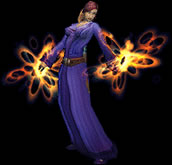
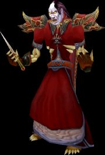

Маг (Mage)

Ранее Маги Варкрафта в основном проживали и работали в
университете Даларана, однако после нападения Пылающего Легиона Маги
были вынуждены покинуть это место, и теперь их можно найти почти в
любом уголке этого мира.
Маг - очень важный и очень
полезный член группы. Одно из самых сильных способностей Мага - это
способность превращения монстра в овцу. Это делает жизнь намного проще, когда
группу атакует большое число монстров, и Маг выводит из строя
какого-то из них. Маг может телепортироваться. Кроме того, Маг может
создавать еду и питье, которое поможет быстро востановить силы после
битвы. |
Доступен расам: Люди, Гномы, Тролли, Нежить
Стандартные индикаторы: Здоровье/Мана
Используемый тип
одежды: тряпичные рубашки, робы, кожаные накидки
Используемое
оружие: посохи, палки, кинжалы, мечи
|
Положительные стороны Мага:
- Способность превращения в овцу монстров
- Может создавать еду и питье буквально из воздуха
- Наличие заклинаний, поражающих сразу несколько рядом стоящих
целей
- Может телепортироваться
- Может становиться невидимым
Слабые стороны:
- Сложность борьбы с монстрами с сопротивлением к магии
- Маги - очень хрупкий и легко убиваемый в определенных
ситуациях класс
- Может носить только легкие доспех
|
 |
Richie production, Ltd. 2008